Learning to Hybrid Search:
mixing BM25, LLMs and metadata into an ultimate ranking ensemble
Grebennikov Roman | DeliveryHero SE | Haystack US 2023
This is me

- Long ago: PhD in CS, quant trading, credit scoring
- Search & personalization for ~7 years
- Metarank maintainer
- DeliveryHero: search & relevance
A typical "hybrid search" talk:
- A is [maybe] better than B
- Large C is [a bit] smarter than small D
- You [probably] need E
No numbers, no comparisons
- Reproducability: proprietary tools and data
- Legal: insider information
Many companies, same problems
- Relevance: making visitor happier
- CTR/Conversion: making company happier
- Query understanding: language, intent, semantics
Open data + open tools
One step closer to reproducability?
- TREC = ❤️
- There
arewere no e-commerce datasets!
Amazon ESCI: open e-com dataset
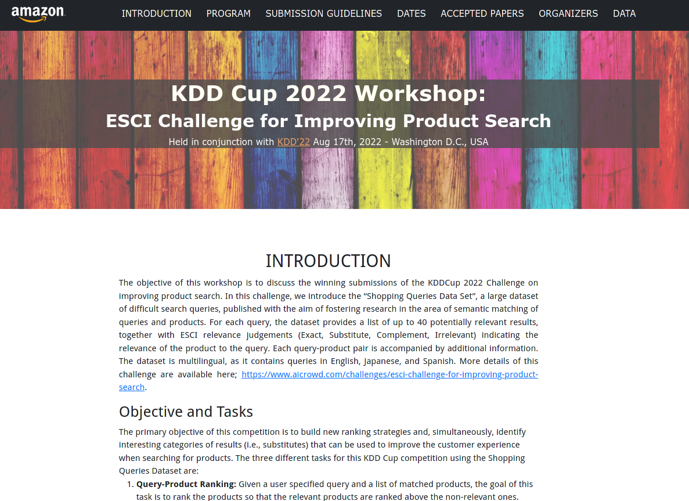
- 130k "hard queries" in EN/ES/JP
- 1.7M products
- 2.6M explicit relevance labels
130k hard queries
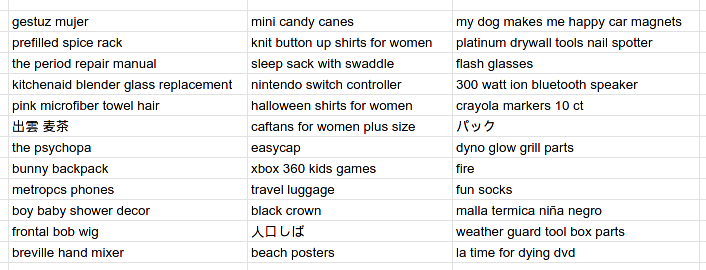
2.6M explicit ESCI labels
| 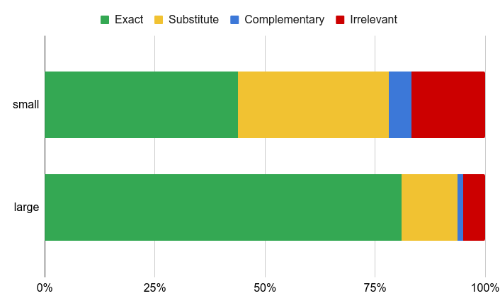 |
|
1.7M real products
{
"product_id": "B07PT4BXWK",
"product_title": "Country Carrot, Artificial Vegetable Fake Food,
Bag of 12, 2 Sizes",
"product_description": "12 pcs vegetables atractive Artificial product.
Orange color with green stem, great for decorating.
Large size, approximately 6-inches (without stem).",
"product_bullet_point": "",
"product_brand": "Mezly",
"product_color": "Orange",
"product_locale": "us"
}
- Text focused: no categories, metadata, reviews
- product_id = ASIN
ESCI-S: an extension to the ESCI
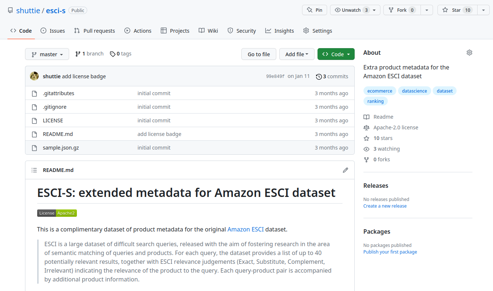Scraped metadata for 92% of ESCI ASINs
Agenda
Take the ESCI and do the "hybrid search"
- Baseline: BM25
- LambdaMART: BM25 and metadata
- Bi-encoders: the notorious all-MiniLM-L6-v2
- Fine-tuning bi-encoders
- Cross-encoders: off-the-shelf and fine-tuned
Minimal amount of ad-hoc Python code: Metarank!
Hybrid search = a glorified Ensebmle Learning
- Take N weak predictors
- Combine into an ensemble model
- "number of stars" = weak predictor
Linear hybrid search
query-title score distribution on ESCI:
| 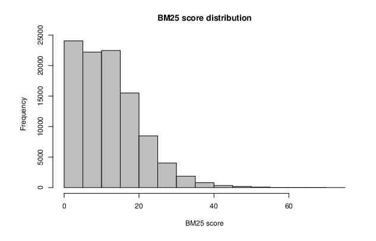 | 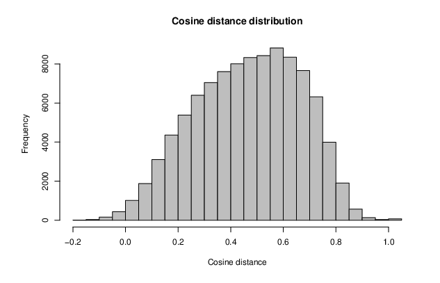 |
score = w1 * norm(bm25) + w2 * norm(cos)
Linear hybrid search
Typical problems of
score = w1 * norm(bm25) + w2 * norm(cos)- Normalization: ad-hoc based on distribution
- Correlations: weights for 7-30-90 days CTR
- Linear: misses non-linear dependencies
Why Metarank?
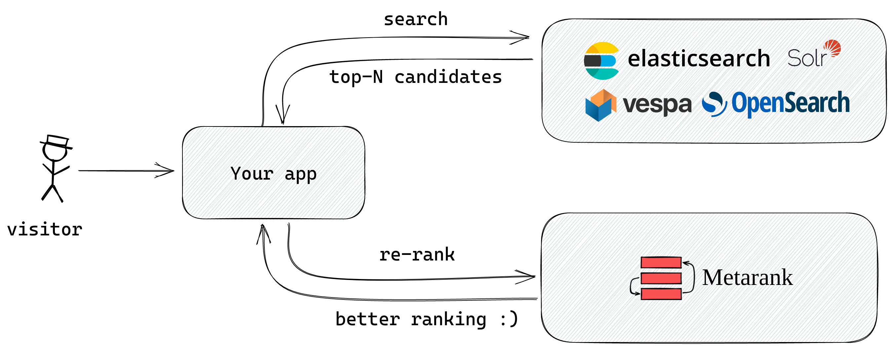
- LambdaMART: NDCG, non-linear, correlations
- An open-source secondary reranker
- Search: focus on recall and speed
- Metarank: focus on top-N precision
How it works
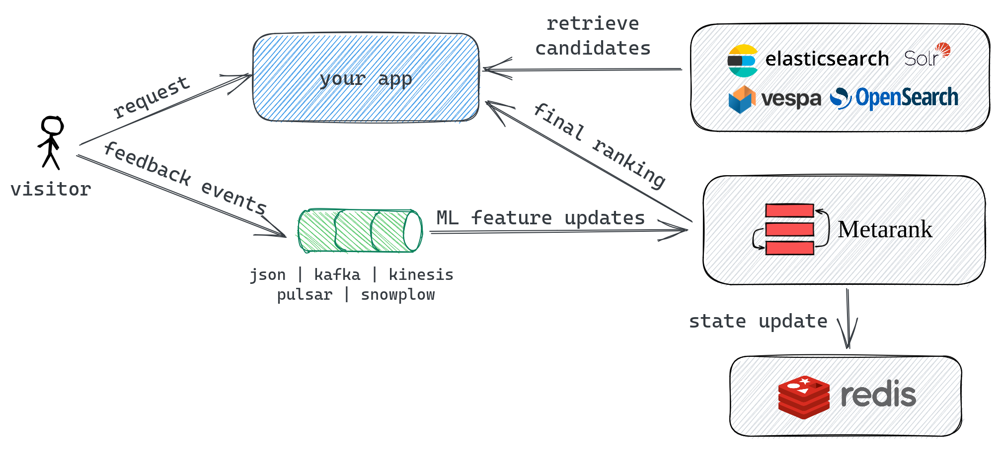
- Standalone Mode: no state, just files
- Import existing dataset, build ranking features
- Get NDCG over test set
Baseline: random ranking
Why do we need it?
- High rate of relevant products = high NDCG
- NDCG lower bound
features:
- type: random
name: random
models:
haystack-demo:
type: lambdamart
backend:
type: xgboost
features:
- random
Baseline: random ranking
| NDCG@5 | NDCG@10 | NDCG@20 | |
| Random | 0.6588 | 0.7220 | 0.8234 |
Baseline: BM25
- Multiple fields in ES: optimal boosts?
- ES-LTR: hard to setup
- Compute BM25 without Lucene/ES? 🤔
Down the BM25 hole
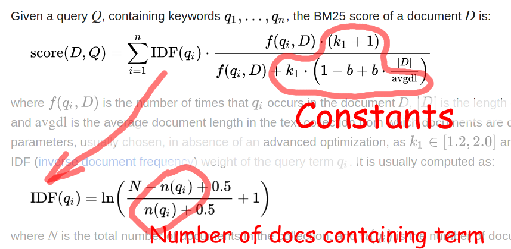- Only term frequencies are needed
- k1=1.2, b=0.75 as in Lucene/ES
BM25 without Lucene
- type: field_match
name: query_desc_bm25
itemField: item.title
rankingField: ranking.query
method:
type: bm25
language: english
termFreq: termfreq.json
| NDCG@5 | NDCG@10 | NDCG@20 | |
| Random | 0.6588 | 0.7220 | 0.8234 |
| BM25(title) | 0.7555 | 0.7966 | 0.8711 |
BM25 over multiple fields
per-field score = weak predictor
features:
- query_title_bm25
- query_desc_bm25
- query_bullets_bm25
| NDCG@5 | NDCG@10 | NDCG@20 | |
| Random | 0.6588 | 0.7220 | 0.8234 |
| BM25(title) | 0.7555 | 0.7966 | 0.8711 |
| BM25(title, desc, bullets) | 0.7620 | 0.8023 | 0.8740 |
query: lawnmower tires without rims
title: Dr.Roc Tire Spoon Lever Dirt Bike Lawn Mower Motorcycle
Tire Changing Tools with Durable Bag 3 Tire Irons 2
Rim Protectors 1 Valve Stems Set TR412 TR413
title: MaxAuto 13x5.00-6 Lawn Mower Tires with Rim 13x5.00-6
Tire and Wheel 13x5-6 NHS Tire 13x5x6 Pneumatic Tire
Years of Amazon-specific SEO optimization
LTR: categorical features
- type: string
name: material
field: item.material // color, category[1,2,3]
scope: item
encode: index // Supports XGBoost 1.7+/LightGBM 3+/Catboost
// native categorical features
values:
- fabric
- glass
- leather
- ...
LTR: numeric features
- type: number
name: stars
field: item.stars
scope: item
# stars, # ratings, price, weight
LTR: 2017 edition
features: [query_*_bm25, category*,
color, material,
price, ratings,
stars, template,
weight]
| NDCG@5 | NDCG@10 | NDCG@20 | |
| Random | 0.6588 | 0.7220 | 0.8234 |
| BM25(title) | 0.7555 | 0.7966 | 0.8711 |
| BM25(title, desc, bullets) | 0.7620 | 0.8023 | 0.8740 |
| LMart(bm25, meta) | 0.7675 | 0.8075 | 0.8769 |
Hybrid Search
Traditional hybrid search
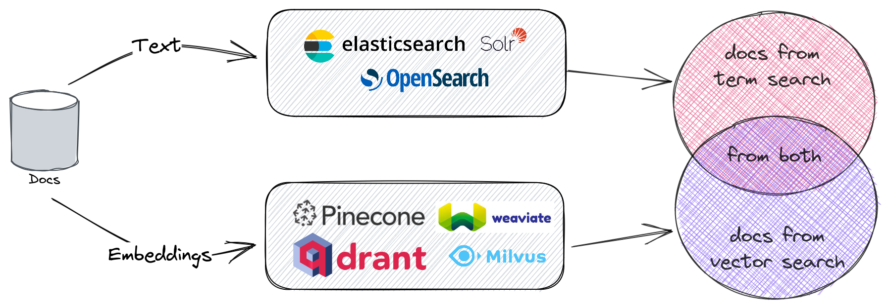
Crafting embeddings:
- Commercial providers: Cohere, OpenAI
- Pre-trained: sentence-transformers
- DIY: fine-tuning
Siamese BERT networks
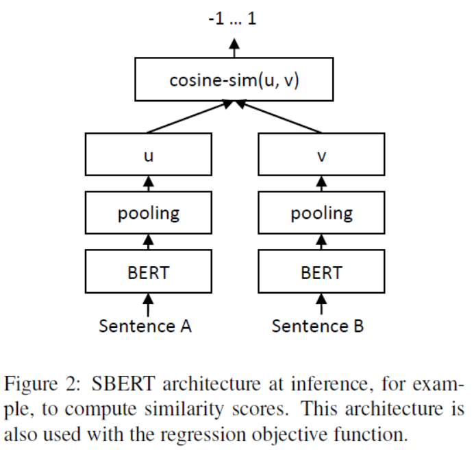
- Document indexing can happen offline!
- Only need to embed query during search
- HNSW for Approximate k-NN
Pre-trained all-MiniLM-L6-v2
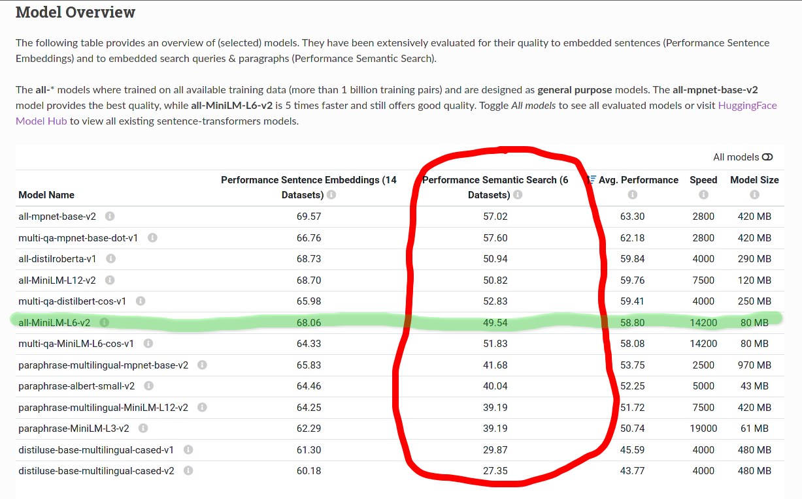- Small and fast for CPU inference
- Still precise on semantic search
all-MiniLM-L6-v2 in Python
from sentence_transformers import SentenceTransformer, util
model = SentenceTransformer('all-MiniLM-L6-v2')
#Sentences are encoded by calling model.encode()
emb1 = model.encode("This is a red cat with a hat.")
emb2 = model.encode("Have you seen my red cat?")
cos_sim = util.cos_sim(emb1, emb2)
print("Cosine-Similarity:", cos_sim)
Fine, but our search stack is in Java!
all-MiniLM-L6-v2 in Java/ONNX
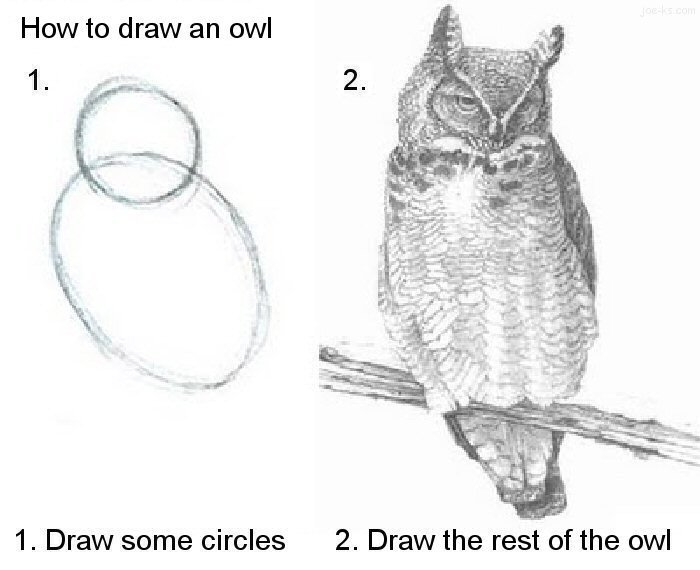
val text = "This is a red cat with a hat"
val vocab = DefaultVocabulary.builder().addFromTextFile(...).build()
val bert = new BertFullTokenizer(vocab, true)
val tokensStrings = "[CLS]" :: bert.tokenize(text) :: "[SEP]"
val tokens = tokensStrings.map(t => vocab.getIndex(t)).toArray
val attmask = Array.fill(tokens.length)(1L)
val tokenTypes = Array.fill(tokens.length)(0L)
all-MiniLM-L6-v2 in Java/ONNX
val env = OrtEnvironment.getEnvironment()
val session = env.createSession("minilm-v2.onnx", new SessionOptions())
val size = Array(1, tokens.length)
val tensor1 = OnnxTensor.createTensor(env, LongBuffer.wrap(tokens), size)
val tensor2 = OnnxTensor.createTensor(env, LongBuffer.wrap(attmask), size)
val tensor3 = OnnxTensor.createTensor(env, LongBuffer.wrap(tokenTypes), size)
val out = session.run(Map(
"input_ids" -> tensor1,
"token_type_ids" -> tensor3,
"attention_mask" -> tensor2).asJava)
val preds = out.get(0).getValue.asInstanceOf[Array[Array[Array[Float]]]
As seen in: Vespa, OpenSearch Model Serving, Metarank
Bi-encoders in practice
- type: field_match
name: query_title_minilm6
itemField: item.title
rankingField: ranking.query
method:
type: bi-encoder
model: metarank/all-MiniLM-L6-v2
dim: 384
| NDCG@5 | NDCG@10 | NDCG@20 | |
| Random | 0.6588 | 0.7220 | 0.8234 |
| BM25(title, desc, bullets) | 0.7620 | 0.8023 | 0.8740 |
| LMart(bm25, meta) | 0.7675 | 0.8075 | 0.8769 |
| all-MiniLM-L6-v2 | 0.7670 | 0.8069 | 0.8775 |
Bi-encoder models
- metarank/all-MiniLM-L6-v2: 10M, 386 dims
- metarank/all-MiniLM-L12-v2: 15M, more layers
- metarank/all-mpnet-base-v2: 100M, 768 dims
| NDCG@5 | NDCG@10 | NDCG@20 | |
| all-MiniLM-L6-v2 | 0.7670 | 0.8069 | 0.8775 |
| all-MiniLM-L12-v2 | 0.7685 | 0.8077 | 0.8786 |
| all-mpnet-base-v2 | 0.7694 | 0.8089 | 0.8794 |
Bring-your-own-model with ONNX
ONNX: Vespa, OpenSearch Model Serving, Metarank
$> pip install transformers[onnx] sentence-transformers
$> python -m transformers.onnx \
--model=sentence-transformers/all-MiniLM-L6-v2 \
export_dir
LTR with bi-encoders
Cosine similarity = yet another ranking feature
| NDCG@5 | NDCG@10 | NDCG@20 | |
| BM25(title, desc, bullets) | 0.7620 | 0.8023 | 0.8740 |
| LM(bm25, meta) | 0.7675 | 0.8075 | 0.8769 |
| all-MiniLM-L6-v2 | 0.7670 | 0.8069 | 0.8775 |
| LM(bm25, minilm) | 0.7816 | 0.8168 | 0.8840 |
| LM(bm25, minilm, meta) | 0.7825 | 0.8186 | 0.8846 |
Fine-tuning?
What is fine-tuning?
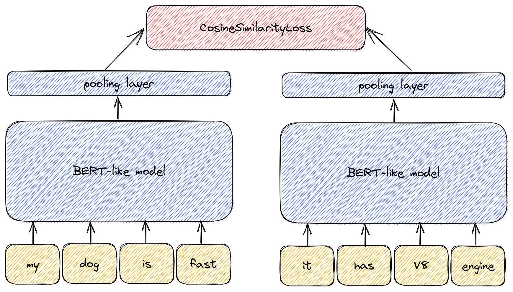- Existing LLM as a source
- Custom loss: minimize cosine distance
- Slightly update weights on a new dataset
Which LLM to pick?
-
MS MiniLM, T5, GPT-J:
- pro: any model from HuggingFace
- con: no clue about sentence similarity
- con: needs a large dataset, slow
- sentence-transformers:
- pro: 1K queries is a good start
- con: no recent models
CosineSimilarityLoss
Minimizes the distance within each sample
Needs triplets of query-document-score:
- Linear mapping: E-S-C-I to [1.0, 0.66, 0.33, 0.0]
- Exponential mapping: E-S-C-I to [1.0, 0.1, 0.001, 0.0]
From docs: no need for hard negatives, slow to converge
MultipleNegativesRankingLoss
Needs triplets of query-positive-negative:
- E/I: Exact = positive, Irrelevant = negative
- E/SCI: Exact = positive, other = negative
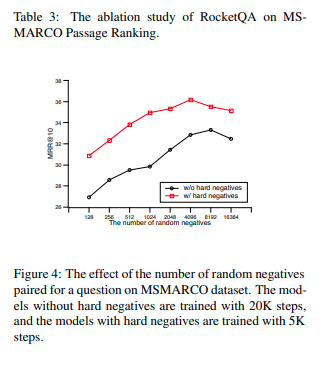
From docs: hard negatives needed, fast to converge
Quality of negatives
- Easy: distinguish dogs from trains
- Hard: distinguish breeds of dogs

Implicit feedback as labels
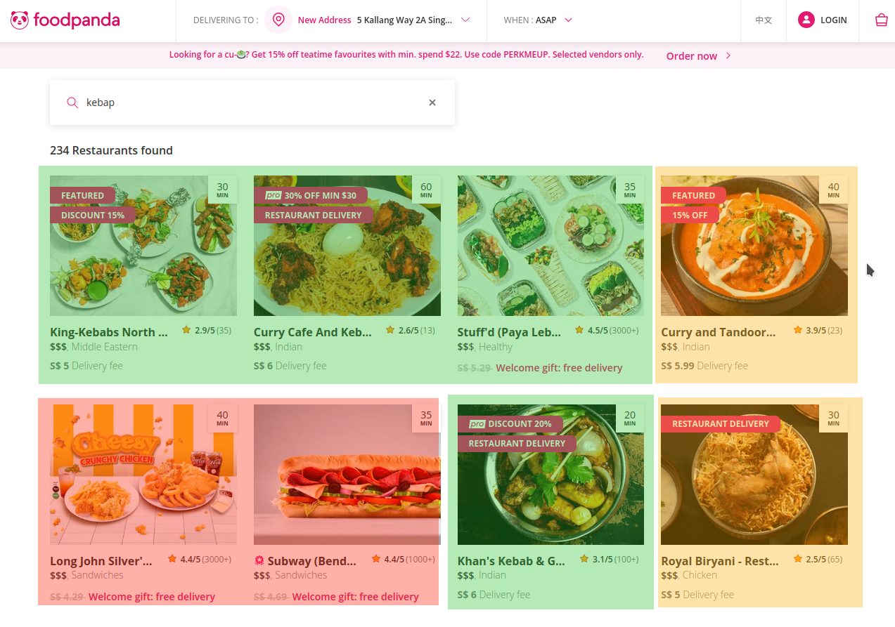
Implicit feedback as labels
- Green: high per-query CTR, high confidence
- Yellow: low confidence
- Red: low per-query CTR, high confidence
Fine-tuning is easy
(when you have a GPU)
model = SentenceTransformer('sentence-transformers/all-MiniLM-L6-v2')
train_dataset = ESCIDataset(input='train-small.json.gz')
eval_dataset = ESCIDataset(input='test-small.json.gz')
train_dataloader = DataLoader(train_dataset, shuffle=True)
train_loss = losses.CosineSimilarityLoss(model=model)
model.fit(train_objectives=[(train_dataloader, train_loss)],
epochs=1,
optimizer_params = {'lr': 1e-5},
output_path=model_save_path)
model.save(model_save_path)
Things to watch for
- Batch size: the largest value your GPU can fit
- Epochs: 1-2, quick over-fitting
- Cheap GPUs: Google Colab, Kaggle, vast.ai
CPU vs GPU
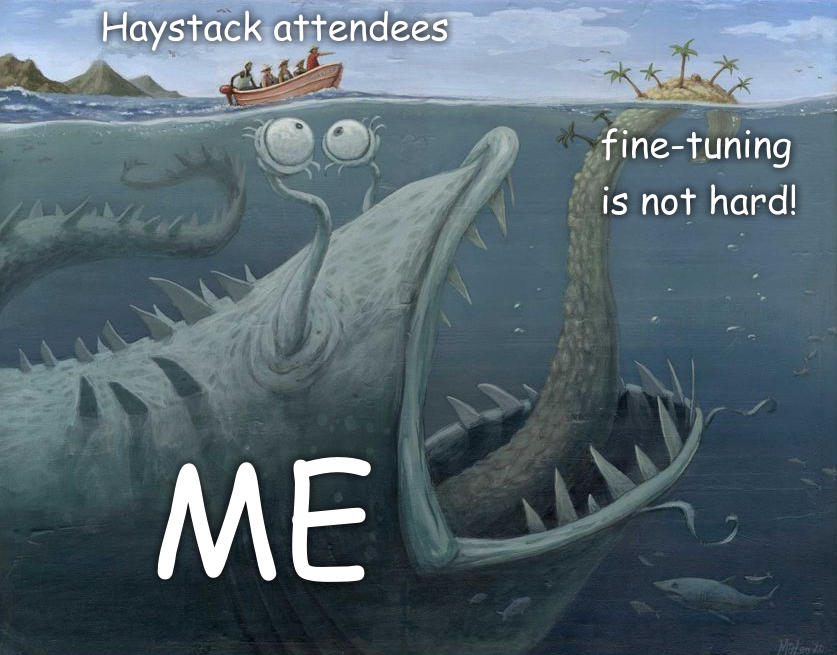
all-MiniLM-L6-v2 over ESCI dataset:
- RTX 3060: 6 minutes
- Ryzen 7 2600: 240 minutes
Fine-tuned bi-encoders
| NDCG@5 | NDCG@10 | NDCG@20 | |
| BM25(title, desc, bullets) | 0.7620 | 0.8023 | 0.8740 |
| all-MiniLM-L6 | 0.7670 | 0.8069 | 0.8775 |
| esci-MiniLM-L6, MN e/i | 0.7783 | 0.8161 | 0.8834 |
| esci-MiniLM-L6, MN e/sci | 0.7838 | 0.8212 | 0.8864 |
| esci-MiniLM-L6, cos+lin | 0.7800 | 0.8184 | 0.8845 |
| esci-MiniLM-L6, cos+exp | 0.7881 | 0.8240 | 0.8874 |
L12 and MPNET fine-tuning

| NDCG@5 | NDCG@10 | NDCG@20 | |
| BM25(title, desc, bullets) | 0.7620 | 0.8023 | 0.8740 |
| esci-MiniLM-L6, cos+exp | 0.7881 | 0.8240 | 0.8874 |
| esci-MiniLM-L12, MN e/sci | 0.7818 | 0.8199 | 0.8858 |
| esci-mpnet, cos+exp | 0.7990 | 0.8329 | 0.8926 |
LTR and fine-tuned bi-encoders
LTR never makes things worse
| NDCG@5 | NDCG@10 | NDCG@20 | |
| BM25(title, desc, bullets) | 0.7620 | 0.8023 | 0.8740 |
| LM(bm25, minilm, meta) | 0.7825 | 0.8186 | 0.8846 |
| LM(bm25, mpn-ft, meta) | 0.8053 | 0.8390 | 0.8959 |
Bi-encoder performance
Benchmark (batch) (model) Mode Cnt Score Error Units
encode 1 all-MiniLM-L6-v2 avgt 30 13.350 ± 1.813 ms/op
encode 1 all-MiniLM-L12-v2 avgt 30 25.954 ± 2.210 ms/op
encode 1 all-mpnet-base-v2 avgt 30 64.208 ± 2.932 ms/op
Conclusions
- Larger the LLM - smaller the training set
- Fine-tuning: simple way for a HUGE relevance boost
- ESCI != e-commerce
- Large LLMs are slow on CPU
Cross-encoders
Cross-encoders

- Classifier head on top of BERT
- No cosine similarity: let the LLM work
Pre-trained CE
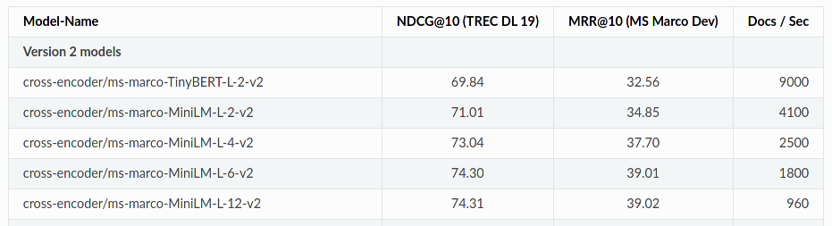
from sentence_transformers import CrossEncoder
model = CrossEncoder('model_name', max_length=512)
scores = model.predict([('How many people live in Berlin?',
'Berlin had a population of 3,520,031 people.'),
('How many people live in Berlin?',
'Berlin is well known for its museums.')])
CE: pros & cons
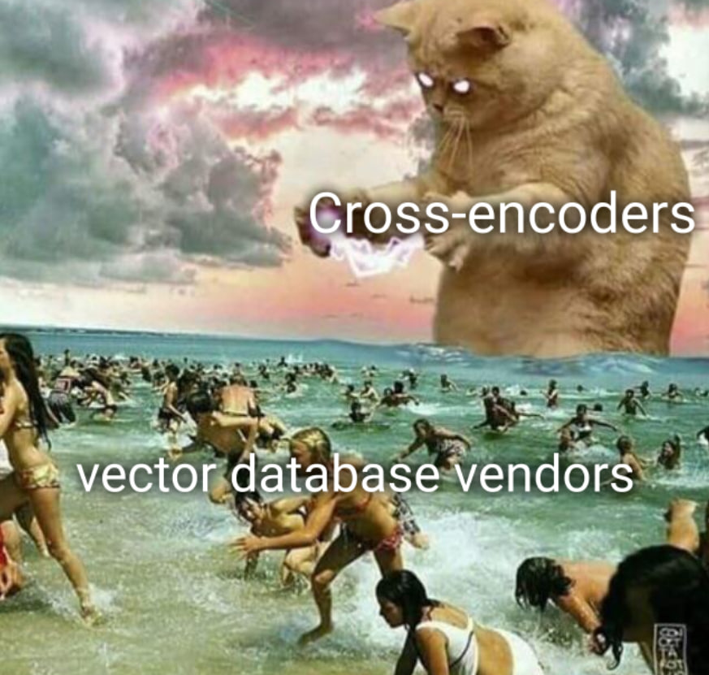
- ChatGPT: "how relevant is text A for query B"
- No Approximate k-NN search, only top-N
Generic SBERT
- type: field_match
name: query_title_ce
itemField: item.title
rankingField: ranking.query
method:
type: cross-encoder
model: metarank/ce-all-MiniLM-L6-v2
dim: 384
| NDCG@5 | NDCG@10 | NDCG@20 | |
| BM25(title, desc, bullets) | 0.7620 | 0.8023 | 0.8740 |
| all-MiniLM-L6 | 0.7670 | 0.8069 | 0.8775 |
| esci-mpnet | 0.7990 | 0.8329 | 0.8926 |
| ce-msmarco-MiniLM-L6 | 0.7767 | 0.8120 | 0.8815 |
Fine-tuning cross-encoders
model = CrossEncoder('cross-encoder/ms-marco-MiniLM-L-6-v2', num_labels=1)
train_dataset = ESCIDataset(input='train-small.json.gz')
train_dataloader = DataLoader(train_dataset, shuffle=True)
model.fit(train_dataloader=train_dataloader,
epochs=num_epochs,
warmup_steps=warmup_steps,
optimizer_params = {'lr': lr},
output_path=model_save_path)
model.save(model_save_path)
CE fine-tuning results
| NDCG@5 | NDCG@10 | NDCG@20 | |
| BM25(title, desc, bullets) | 0.7620 | 0.8023 | 0.8740 |
| all-MiniLM-L6 | 0.7670 | 0.8069 | 0.8775 |
| esci-mpnet | 0.7990 | 0.8329 | 0.8926 |
| ce-msmarco-MiniLM-L6 | 0.7767 | 0.8120 | 0.8815 |
| ce-esci-MiniLM-L6 | 0.8062 | 0.8364 | 0.8963 |
| ce-esci-MiniLM-L12 | 0.8134 | 0.8426 | 0.9001 |
Avengers, combine!
models:
default:
type: lambdamart
backend:
type: xgboost
features:
- query_title_mpnet
- query_title_ce
- query_title_bm25
- query_desc_bm25
- query_bullets_bm25
- category0
- category1
- category2
- color
- material
- price
- ratings
- stars
- template
- weight
LTR in the mix
| NDCG@5 | NDCG@10 | NDCG@20 | |
| BM25(title, desc, bullets) | 0.7620 | 0.8023 | 0.8740 |
| LM(bm25, minilm, meta) | 0.7825 | 0.8186 | 0.8846 |
| LM(bm25, mpn-ft, meta) | 0.8053 | 0.8390 | 0.8959 |
| LM(OH, GOD, NO) | 0.8228 | 0.8508 | 0.9041 |
Cross-encoder performance
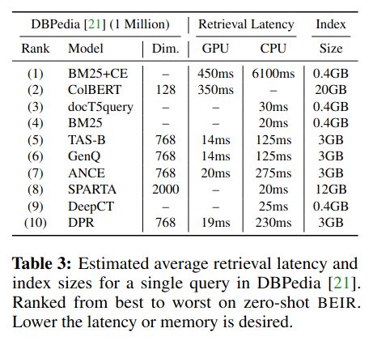
Benchmark (batch) (model) Mode Cnt Score Error Units
encode 1 ce-msmarco-MiniLM-L6-v2 avgt 30 12.298 ± 0.581 ms/op
encode 10 ce-msmarco-MiniLM-L6-v2 avgt 30 58.664 ± 2.064 ms/op
encode 100 ce-msmarco-MiniLM-L6-v2 avgt 30 740.422 ± 13.369 ms/op
BE & CE pre-caching
- type: field_match
name: query_title_ce
itemField: item.title
rankingField: ranking.query
method:
type: cross-encoder
model: metarank/ce-esci-MiniLM-L6-v2
cache: precomputed-cache.csv
- BE: pre-compute query embeddings for top-100k
- CE: pre-compute scores for top-10k queries x top-100 results
Are CE practical?
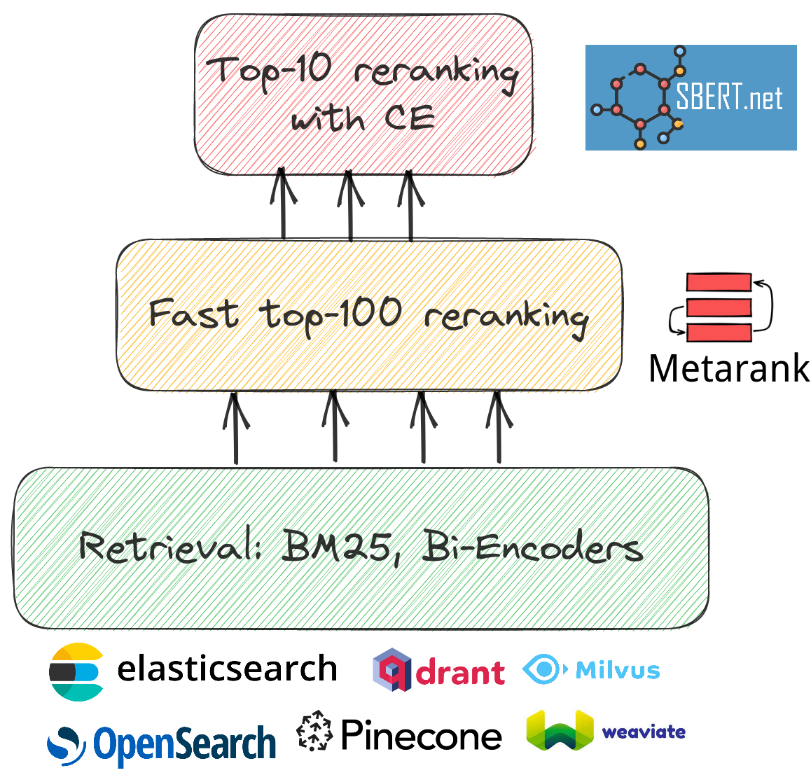
- Either top-10, or GPU inference
GPU cloud instance costs
| Instance | GPU | On-demand |
| AWS g4dn.xlarge | T4 | 378$/month |
| AWS P3.2xlarge | V100 | 2203$/month |
TREC'23 E-Commerse Search
- E2E retrieval: search over complete ESCI
- Ranking: re-rank top-100 matching docs
- Multi-modal: with clicks and images
Dataset release: May 1, submissions till Aug 9
https://trec-product-search.github.ioLinks
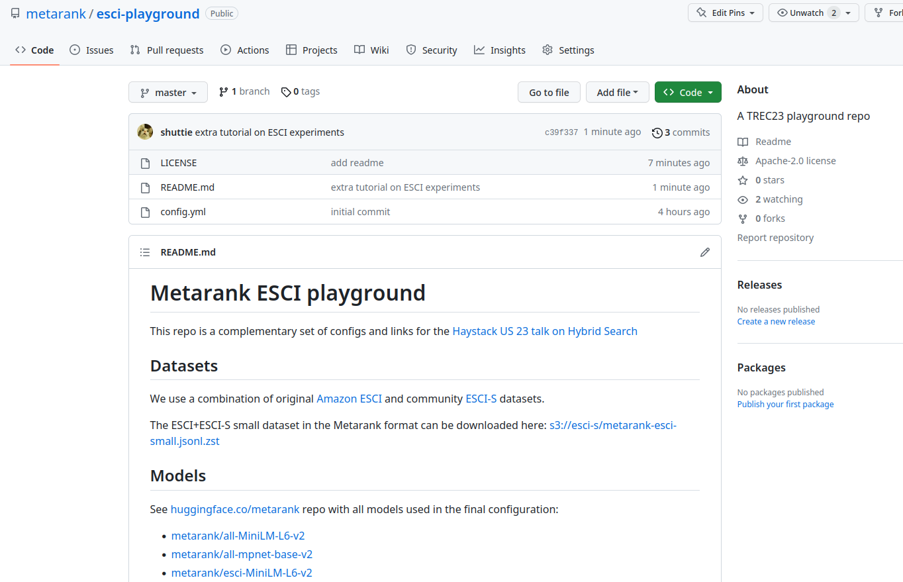Conclusions
- Fine-tuning is worth it: cheap, easy, fast
- Balance between hardware costs and ranking quality
- BE/CE/LM are not perfect: ensemble learning FTW